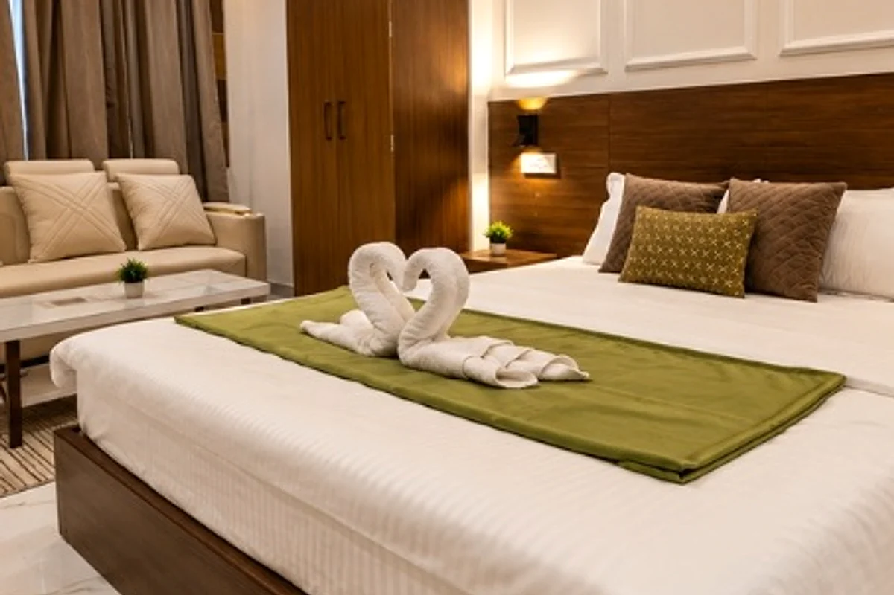
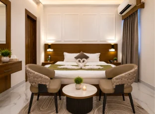
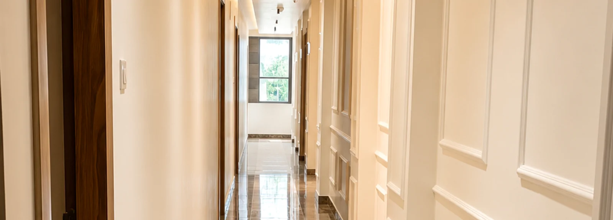
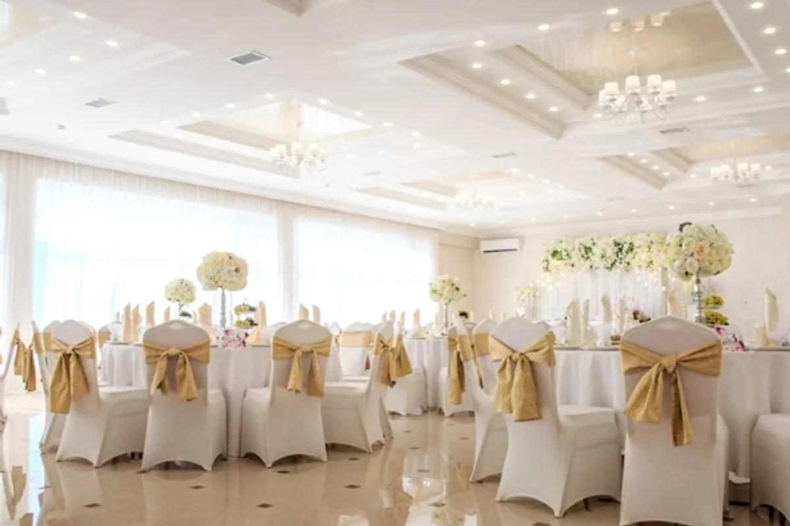

Room category
Classic Room
A comfortable room option for a straightforward stay near RPS More.
View roomHotel Vastu Premium · Patna
Classic, Club and Premium rooms with Wi-Fi, private parking, restaurant service and 24-hour guest support.
Accommodation
Choose from Classic, Club and Premium rooms, then check live configured availability and pricing for your dates and guest count.
A comfortable room option for a straightforward stay near RPS More.
View room
A room option for guests looking for additional comfort during their stay.
View room
A room option designed for guests who prefer a more spacious stay.
View roomWelcome
A practical base for family, business and leisure stays near RPS More, RPS Nagar and the wider Danapur area.

Original hotel photography
Explore authentic views of Hotel Vastu Premium, including rooms, interiors and guest spaces.



Facilities
Current Hotel Vastu Premium facilities include practical guest essentials, event space and support for business travel.


Dining
Enjoy the convenience of an on-site restaurant, breakfast and room service. Call the hotel for the current menu, timings and availability.
Dining detailsNearby transport
Approximate road distances from Hotel Vastu Premium. Actual route and journey time can vary with traffic and road conditions.
Rail
Approx. 4–5 km
A convenient rail option in the Rukanpura / west Patna side.
DirectionsRail
Approx. 10–12 km
Patna’s main railway station. Allow extra time during peak city traffic.
DirectionsAir
Approx. 7.4 km
Jay Prakash Narayan International Airport. Allow extra time during busy traffic periods.
DirectionsRail
Approx. 3.7 km drive
A nearby major rail option in Khagaul / Danapur for many long-distance trains.
DirectionsRail
Approx. 6–8 km
Useful for guests arriving through the Phulwari Sharif side of Patna.
DirectionsDistances are approximate for travel planning only. Check live routing on the day of travel.
Useful information
The hotel is near RPS Law College, RPS Nagar, Kaliket Nagar, Patna, Bihar 801503.
Free private parking is listed for the property. Call ahead if you need to confirm space for a particular vehicle.
Free Wi-Fi is listed as an available hotel facility.
Yes. The property is listed with an on-site restaurant, breakfast and room service. Current menu and timings should be confirmed directly.
Call Hotel Vastu Premium on +91 80020 07466 or use the stay planner to prepare your details before calling.
Patliputra Junction is approximately 4–5 km by road. Check live directions because the route and travel time can vary.
Jay Prakash Narayan International Airport is approximately 7.4 km by road. Travel time depends on traffic.
Phulwari Sharif Railway Station is approximately 6–8 km away for travel planning. Check live routing on the day of travel.
Patna Junction is approximately 10–12 km by road. Travel time can vary significantly with city traffic.
Danapur Railway Station is approximately 3.7 km by road in current hotel travel-listing data. Check live routing for the current route and traffic.
Prepare your preferred dates and guest count in the stay planner, then call the hotel directly on +91 80020 07466 to confirm live availability and price.
Plan your stay